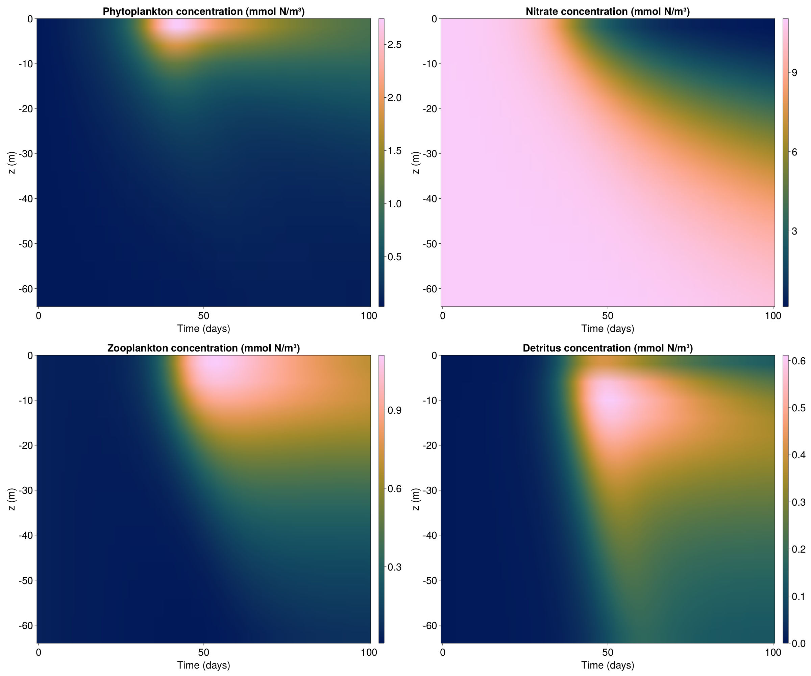

One dimensional column example
In this example we will setup a simple 1D column with the LOBSTER biogeochemical model and observe its evolution. This demonstraits:
- How to setup OceanBioME's biogeochemical models
- How to visulise results
This is forced by idealised mixing layer depth and surface photosynthetically available radiation (PAR) which are setup first
Install dependencies
First we will check we have the dependencies installed
using Pkg
pkg"add OceanBioME, Oceananigans, Printf, Plots, CairoMakie, NetCDF, JLD2"Model setup
We load the packages and choose the default LOBSTER parameter set
using OceanBioME, Oceananigans, Printf
using Oceananigans.Units: second, minute, minutes, hour, hours, day, days, year, yearsSurface PAR and turbulent vertical diffusivity based on idealised mixed layer depth
Setting up idealised functions for PAR and diffusivity (details here can be ignored but these are typical of the North Atlantic)
PAR⁰(x, y, t) = 60*(1-cos((t+15days)*2π/(365days)))*(1 /(1 +0.2*exp(-((mod(t, 365days)-200days)/50days)^2))) .+ 2
H(t, t₀, t₁) = ifelse(t₀<t<t₁, 1.0, 0.0)
fmld1(t) = H.(t, 50days, 365days).*(1 ./(1 .+exp.(-(t-100days)/(5days)))).*(1 ./(1 .+exp.((t .-330days)./(25days))))
MLD(t) = (-10 - 340 *(1 - fmld1(364.99999days) * exp( -mod(t, 365days)/25days) - fmld1(mod(t, 365days))))
κₜ(x, y, z, t) = 1e-2*max(1-(z+MLD(t)/2)^2/(MLD(t)/2)^2,0)+1e-4;Grid and PAR field
Define the grid and an extra Oceananigans field for the PAR to be stored in
grid = RectilinearGrid(size=(1, 1, 50), extent=(20, 20, 200))1×1×50 RectilinearGrid{Float64, Oceananigans.Grids.Periodic, Oceananigans.Grids.Periodic, Oceananigans.Grids.Bounded} on Oceananigans.Architectures.CPU with 3×3×3 halo
├── Periodic x ∈ [0.0, 20.0) regularly spaced with Δx=20.0
├── Periodic y ∈ [0.0, 20.0) regularly spaced with Δy=20.0
└── Bounded z ∈ [-200.0, 0.0] regularly spaced with Δz=4.0Biogeochemical and Oceananigans model
Here we setup the Oceananigans model using the LOBSTER biogeochemical model in its default configuration. This includes using a two band light attenuation model for the photosynthetically active radiation which is automatically setup. We also need to give it the PAR field and then we set some initial values.
model = NonhydrostaticModel(; grid,
advection = nothing, # we don't need to calculate advection because we have no velocity
closure = ScalarDiffusivity(ν=κₜ, κ=κₜ),
biogeochemistry = LOBSTER(; grid,
surface_phytosynthetically_active_radiation = PAR⁰))
set!(model, P=0.03, Z=0.03, NO₃=11.0, NH₄=0.05)
N₀ = sum(model.tracers.P) + sum(model.tracers.Z) + sum(model.tracers.NO₃) + sum(model.tracers.NH₄) + sum(model.tracers.sPOM) + sum(model.tracers.bPOM) + sum(model.tracers.DOM)555.5Simulation
Next we setup the simulation along with some callbacks that:
- Show the progress of the simulation
- Store the output
- Prevent the tracers from going negative from numerical error (see discussion of this in the positivity preservation implimentation page)
simulation = Simulation(model, Δt=10minutes, stop_time=100days)
progress_message(sim) = @printf("Iteration: %04d, time: %s, Δt: %s, wall time: %s\n",
iteration(sim),
prettytime(sim),
prettytime(sim.Δt),
prettytime(sim.run_wall_time))
simulation.callbacks[:progress] = Callback(progress_message, IterationInterval(100))
filename = "column"
simulation.output_writers[:profiles] = JLD2OutputWriter(model,
merge(model.tracers, model.auxiliary_fields),
filename = "$filename.jld2",
schedule = TimeInterval(1day),
overwrite_existing = true)
scale_negative_tracers = ScaleNegativeTracers(tracers = (:NO₃, :NH₄, :P, :Z, :sPOM, :bPOM, :DOM))
simulation.callbacks[:neg] = Callback(scale_negative_tracers; callsite = UpdateStateCallsite())Callback of ScaleNegativeTracers{NTuple{7, Symbol}, NamedTuple{(:NO₃, :NH₄, :P, :Z, :sPOM, :bPOM, :DOM), NTuple{7, Float64}}, Bool} on IterationInterval(1)Run!
Finally we run the simulation
run!(simulation)
N₁ = sum(model.tracers.P) + sum(model.tracers.Z) + sum(model.tracers.NO₃) + sum(model.tracers.NH₄) + sum(model.tracers.sPOM) + sum(model.tracers.bPOM) + sum(model.tracers.DOM)506.68780478929494Now we can visulise the results
P = FieldTimeSeries("$filename.jld2", "P")
NO₃ = FieldTimeSeries("$filename.jld2", "NO₃")
Z = FieldTimeSeries("$filename.jld2", "Z")
D = FieldTimeSeries("$filename.jld2", "sPOM") .+ FieldTimeSeries("$filename.jld2", "bPOM")
x, y, z = nodes(P)
times = P.times
using CairoMakie
f=Figure(backgroundcolor=RGBf(1, 1, 1), fontsize=30, resolution = (2400, 2000))
axP = Axis(f[1, 1:2], ylabel="z (m)", xlabel="Time (days)", title="Phytoplankton concentration (mmol N/m³)")
hmP = heatmap!(times./days, z[35:50], P[1, 1, 35:50, 1:101]', interpolate=true, colormap=:batlow)
cbP = Colorbar(f[1, 3], hmP)
axNO₃ = Axis(f[1, 4:5], ylabel="z (m)", xlabel="Time (days)", title="Nitrate concentration (mmol N/m³)")
hmNO₃ = heatmap!(times./days, z[35:50], NO₃[1, 1, 35:50, 1:101]', interpolate=true, colormap=:batlow)
cbNO₃ = Colorbar(f[1, 6], hmNO₃)
axZ = Axis(f[2, 1:2], ylabel="z (m)", xlabel="Time (days)", title="Zooplankton concentration (mmol N/m³)")
hmZ = heatmap!(times./days, z[35:50], Z[1, 1, 35:50, 1:101]', interpolate=true, colormap=:batlow)
cbZ = Colorbar(f[2, 3], hmZ)
axD = Axis(f[2, 4:5], ylabel="z (m)", xlabel="Time (days)", title="Detritus concentration (mmol N/m³)")
hmD = heatmap!(times./days, z[35:50], D[1, 1, 35:50, 1:101]', interpolate=true, colormap=:batlow)
cbD = Colorbar(f[2, 6], hmD)
save("column.png", f)CairoMakie.Screen{IMAGE}

This page was generated using Literate.jl.